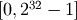
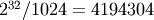
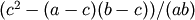

Canvas 1.4 Python API¶
Introduction¶
This section describes the Python application programming interface that accompanies Canvas version 1.5, which is part of the Schrödinger Suite 2012 release.
The Canvas Python API consists of a rich library of object‑oriented tools for developing custom cheminformatics applications with a range of functionality, including:
Each Python application you create must import the canvas module:
import schrodinger.application.canvas.base as canvas
If you wish to use Structure objects (sometimes also referred to as “mmct” objects, for the underlying C library implementation) and convert back and forth between Canvas ChmMol objects, you will need additional imports:
from schrodinger import structure
from schrodinger.infra.canvas import ChmMmctAdaptor
Furthermore, you must have a valid CANVAS_FULL license, and the application must successfully checkout that license before the Canvas APIs can be used. The following checkout procedure is recommended:
try:
lic = canvas.ChmLicenseFull()
except:
sys.stderr.write("Unable to checkout CANVAS_FULL license\n")
sys.exit(1)
if not lic.isValid():
sys.stderr.write("CANVAS_FULL license is not valid\n")
sys.exit(1)
To ensure that all environment variables and paths are set correctly, a Canvas Python application should be invoked as follows:
$SCHRODINGER/run <app_name> [options]
Where $SCHRODINGER points to the directory in which the 2010 Schrodinger software is installed.
Constructors and Static Methods¶
Most Canvas objects are created automatically as a returned value from a member function invoked on another object. For example, if mol is a ChmMol object, mol.getAtom(i) returns a ChmAtom object. However, there are certain objects that you will create explicitly through a constructor. For example:
query = canvas.ChmQuery("c1nc[c,n]cc1")
bitset = canvas.ChmBitset(1024)
There are also cases where you will create an object through a static method of that class, such as:
mol = canvas.ChmMol.fromSMILES("Nc1ccccc1")
query = canvas.ChmQuery.fromMDLFile("query.mol")
In the material that follows, any applicable constructors are documented before other methods of the class, and all static methods are noted as such.
Iterable Lists¶
Lists returned by Canvas APIs behave much like ordinary Python lists, but they are not entirely equivalent, nor can you supply an ordinary Python list as an argument in an API that calls for a Canvas-style list. Another important difference is that after iterating through a Canvas list, you must rewind it before you can iterate through it again. For example:
atoms = mol.getAtoms()
print "First pass..."
for atom in atoms:
print "Label =", atom.getLabel()
print "Second pass..."
atoms.rewind()
for atom in atoms:
print "Label =", atom.getLabel()
# Note that the "for" loops above are equivalent to the following:
while atoms.hasNext():
atom = atoms.next()
print "Label =", atom.getLabel()
Iterator Methods¶
- class schrodinger.application.canvas.base.ChmIterator¶
- __getitem__(i)
The ith item in the list, where i runs from 0 to size()-1. The legality of i is not checked, so if the supplied value is out of range, a segmentation fault can occur.
- at(i)
The ith item in the list, where i runs from 0 to size()-1. If an illegal value is supplied, an exception is thrown.
- hasNext()
True if more items remain in the list.
- next()
The next item in the list
- rewind()
Rewinds to the beginning of the list.
- size()
The total number of items in the list.
Input/Output Streams¶
Certain Canvas APIs operate on an input or output stream that’s attached to file. If the input and output file names are inFile and outFile, respectively, the input/output stream objects may be created as follows:
inStream = canvas.ifstream(inFile)
outStream = canvas.ofstream(outFile)
Exceptions¶
When an error occurs within a Canvas constructor or method, a RuntimeError exception with an informative error message is normally thrown. To handle the exception and display the error message, the following approach may be used:
try:
pass # call some Canvas function here
except Exception as canvasErr:
sys.stderr.write(str(canvasErr) + "\n")
Chemical Structure APIs¶
The classes and methods in this section support chemical structure storage and I/O.
Atoms¶
- class schrodinger.application.canvas.base.ChmAtom¶
Describes a single atom in a ChmMol.
- findNeighbor(otherAtom)
Loops over the bonds to the current ChmAtom, and returns the position (0, 1,...) at which the bond to the supplied ChmAtom is found.
- firstNeighbor()
The first ChmAtom bonded to the current ChmAtom.
- getAtomicNumber()
Atomic number.
- getBond(otherAtom)
The ChmBond between the current ChmAtom and the supplied ChmAtom.
- getBond(i)
The ChmBond between the current ChmAtom and the ith ChmAtom to which it is bonded. All atoms (explicit + implicit) are considered, so i ranges from 0 to mol.getBondCount(True)-1.
- getBondCount(wantImplicitHydrogens=False)
Number of atoms bonded to the current ChmAtom. The Boolean wantImplicitHydrogens is False by default and determines whether bonds to implicit hydrogens should be counted.
- getBonds(wantImplicitHydrogens=False)
Iterable list of bonds (as ChmBond objects) made by the current ChmAtom. The Boolean wantImplictHydrogens is False by default and determines whether bonds to implicit hydrogens will not be included.
- getFormalCharge()
Integer formal charge.
- getHeavyBondCount()
Number of heavy atoms bonded to the current ChmAtom.
- getHeavyBonds()
Iterable list of bonds (as ChmBond objects) made to heavy atoms.
- getHeavyNeighbors()
Iterable list of heavy atoms (as ChmAtom objects) bonded to the current ChmAtom.
- getHybridization()
Hybridization as an integer: 0 → unknown, 1 → sp, 2 → sp2, 3 → sp3 , 4 → sp3d, 5 → sp3d2. The return values are also available as symbolic constants in schrodinger.application.canvas.base: HybridizationUnknown → 0, Sp → 1, Sp2 → 2, Sp3 → 3, Sp3d → 4, and Sp3d2 → 5.
- getHydrogenCount()
Number of hydrogens (explicit + implicit) bonded to the current ChmAtom.
- getImplicitHydrogenCount()
Number of implicit hydrogens bonded to the current ChmAtom.
- getImplicitNeighbors()
Iterable list of bonds (as ChmAtom objects) to implicit hydrogens.
- getLabel()
A string that contains a label of the form <symbol><number>, where <symbol> is the elemental symbol, and <number> is the zero‑based atom number (0, 1,...).
- getMolIndex()
Index (0, 1,...) of the current ChmAtom in its parent ChmMol.
- getNeighbors(wantImplicitHydrogens=False, wantExplicitHydrogens=True)
Iterable list of atoms (as ChmAtom objects) bonded to the current ChmAtom. The Boolean wantImplicitHydrogens is False by default and determines whether implicit hydrogens should be included. The Boolean wantExlicitHydrogens is True by default and determines whether explicit hydrogens should be included.
- getRingSize()
Size of the smallest ring that contains the current ChmAtom.
- getSymbol()
Elemental symbol.
- getTotalValence()
Total valence, which is the sum of the bond orders over all bonds made by the current ChmAtom. For this computation, single → 1, double → 2, triple → 3, aromatic → 1.5.
- getUserData()
An integer-valued piece of data associated with the atom.
- getX()
X coordinate.
- getY()
Y coordinate.
- getZ()
Z coordinate.
- hasCoords()
True if the ChmAtom has coordinates.
- isAromatic()
True if in aromatic ring.
- isBondedTo(otherAtom)
True if bonded to the supplied ChmAtom.
- isCarbon()
True if carbon.
- isHalogen()
True if F, Cl, Br or I.
- isHeavy()
True if not hydrogen.
- isHydrogen()
True if hydrogen.
- isInRing()
True if in ring.
- isNitrogen()
True if nitrogen.
- isOxygen()
True if oxygen.
- isSulfur()
True if sulfur.
- isTerminal()
True if terminal.
- setPartialCharge(q)
Sets the partial charge.
- setUserData(value)
Sets an integer-valued piece of data to associate with the atom.
- setX(x)
Sets the X coordinate.
- setY(y)
Sets the Y coordinate.
- setZ(z)
Sets the Z coordinate.
Bonds¶
- class schrodinger.application.canvas.base.ChmBond¶
Describes a bond between two ChmAtom objects.
- atom1()
First ChmAtom in the ChmBond.
- atom2()
Second ChmAtom in the ChmBond.
- getBondLength()
Bond length in angstroms.
- getMolIndex()
Index (0, 1,...) of the current ChmBond in its parent ChmMol.
- getOrder()
Bond order. 0 → unknown, 1 → single, 2 → double, 3 → triple, 4 → aromatic, 5 → Kekulized single, 6 → Kekulized double. The return values are also available as symbolic constants in schrodinger.application.canvas.base: OrderUnknown → 0, Single → 1, Double → 2, Triple → 3, Aromatic → 4, KekulizedSingle → 5, and KekulizedDouble → 6.
- getRingSize()
Size of the smallest ring that contains the current ChmBond.
- getUserCode()
A non-negative integer-valued code associated with the bond.
- isAromatic()
True if in aromatic ring.
- isInRing()
True if in ring.
- isTerminal()
True if terminal.
- mate(atom)
Given one ChmAtom in the current ChmBond, this function returns the other ChmAtom.
- setUserCode(code)
Sets a non-negative integer-valued code to associate with the bond.
Molecule Conversion¶
- class schrodinger.application.canvas.base.ChmMmctAdaptor¶
Converts between ChmMol and mmct (Structure) objects.
- create(ctHandle[, stereoTreatment[, allHydrogensAsImplicit[, wantProperties]]])
Converts an mmct handle to a ChmMol, returning a new ChmMol object. The ctHandle argument can be accessed via the handle attribute of a Structure object.
Parameters: - stereoTreatment (int) – Controls how stereochemistry is transferred. Default is ChmMmctAdaptor.NoStereo. See Stereochemistry Constants for other legal values.
- allHydrogensAsImplicit (bool) – Determines whether all hydrogens should be stored as implicit hydrogens. Default is False.
- wantProperties (bool) – Determines whether properties should be copied. Default is True.
- create(mol[, wantProperties])
Converts ChmMol to an mmct handle. Returns an integer handle, which can be passed to the Structure constructor to create a Structure object.
Parameters: wantProperties (bool) – Determines whether properties should be copied. Default is True.
Stereochemistry Constants¶
- ChmMmctAdaptor.NoStereo
Ignore stereochemistry (0).
- ChmMmctAdaptor.StereoFromGeometry
Use mmstereo library to assign stereochemistry from 3D structure (1).
- ChmMmctAdaptor.StereoFromGeometry_Safe
As above, but ignore mmstereo assignments that Canvas doesn’t agree with (2).
- ChmMmctAdaptor.StereoFromAnnotation
Use existing mmstero annotations (3).
- ChmMmctAdaptor.StereoFromAnnotation_Safe
As above, but ignore annotations that Canvas doesn’t agree with (4).
- ChmMmctAdaptor.StereoFromAnnotationAndGeometry
Use existing mmstero annotations, with assignment from 3D structure as a backup for unspecified stereochemistry (5).
- ChmMmctAdaptor.StereoFromAnnotationAndGeometry_Safe
As above, but ignore annotations/assignments that Canvas doesn’t agree with (6).
Molecules¶
- class schrodinger.application.canvas.base.ChmMol¶
Describes a chemical structure.
- static fromMDL(molString[, autoName])
Static method that creates a ChmMol from a MOL file string or a single-structure SD file string.
Parameters: autoName (bool) – Determines whether a name is generated automatically with each call to this function (“Molecule1”, “Molecule2”, etc.). Default is False.
- static fromSMILES(smiles[, autoName])
Static method that creates a ChmMol from a SMILES string.
Parameters: autoName (bool) – Determines whether a name is generated automatically with each call to this function (“Molecule1”, “Molecule2”, etc.). Default is False.
- getAtom(i)
The ith ChmAtom in the ChmMol. All atoms (explicit and implicit) are considered, so i ranges from 0 to getAtomCount(True)-1.
- getAtomCount(wantImplicitHydrogens=False)
Number of atoms in the ChmMol. The Boolean wantImplicitHydrogens is False by default and determines whether implicit hydrogens should be counted.
- getAtoms(wantImplicitHydrogens=False)
Iterable list of atoms (as ChmAtom objects) in the ChmMol. The Boolean wantImplicitHydrogens is False by default and determines whether implicit hydrogens should be included.
- getAtoms(mask)
Iterable list of a subset of atoms in the ChmMol. The argument mask is a ChmBitset object, with “on” bits for the subset of atoms in question. The length of mask should be getAtomCount(False).
- getBond(i)
The ith ChmBond in the ChmMol. All atoms (explicit and implicit) are considered, so i ranges from 0 to mol.getBondCount(True)-1.
- getBondCount(wantImplicitHydrogens=False)
Number of bonds in the ChmMol. The Boolean wantImplicitHydrogens is False by default and determines whether bonds to implicit hydrogens should be counted.
- getBonds(wantImplicitHydrogens=False)
Iterable list of bonds (as ChmBond objects) in the ChmMol. The Boolean wantImplicitHydrogens is False by default and determines whether bonds to implicit hydrogens should be included.
- getBonds(bondMask)
Iterable list of a subset of bonds in the ChmMol. The argument bondMask is a ChmBitset object, with “on” bits for the subset of bonds in question.
- getBondsForAtoms(atomMask)
Iterable list of bonds that connect a subset of atoms. The argument atomMask is a ChmBitset with “on” bits for a subset of atoms in the structure. The atoms need not form a contiguous substructure.
- getConnectionTable(wantImplicitHydrogens=False)
Connection table: 1 → bonded, 0 → not bonded. The Boolean wantImplicitHydrogens is False by default and determines whether implicit hydrogens should be included. This method returns a ChmSymmetricMatrix. Use matrix.getItem(i, j) on the returned matrix to get the connectivity between atoms i and j. Atom numbers i and j run from 0 to mol.getAtomCount(wantImplicitHydrogens)-1.
- getConnectionTableWithBondOrders(wantImplicitHydrogens=False)
Analogous to getConnectionTable, except that matrix.getItem(i, j) returns the bond order if atoms i and j are bonded.
- getDistanceMatrix(wantImplicitHydrogens=False)
Shortest path distance matrix. The Boolean wantImplicitHydrogens is False by default and determines whether implicit hydrogens should be included. This method returns a ChmSymmetricMatrix. Use matrix.getItem(i, j) on the returned matrix to get the distance between atoms i and j. Atom numbers i and j run from 0 to mol.getAtomCount(wantImplicitHydrogens)-1.
- getDistanceMatrix3D(wantImplicitHydrogens=False)
Three-dimensional distance matrix. The Boolean wantImplicitHydrogens is False by default and determines whether implicit hydrogens should be included. This method returns a ChmSymmetricMatrix`. Use matrix.getItem(i, j) on the returned matrix to get the distance between atoms i and j. Atom numbers i and j run from 0 to mol.getAtomCount(wantImplicitHydrogens)-1.
- getHeavyAtomCount()
Number of heavy atoms.
- getMW()
Molecular weight.
- getName()
Structure name.
- getNetCharge()
Net charge on structure.
- getProperties()
Name → value mappings of all stored properties. May be coerced into an ordinary Python dictionary as follows:
props = dict(mol.getProperties())
- getProperty(propName)
The value of a stored property, cast as a string.
- getPropertyCount()
The number of stored properties.
- has2DCoords()
True if structure has X and Y coordinates only.
- has3DCoords()
True if structure has X, Y and Z coordinates.
- hasCoords()
True if structure has 2D or 3D coordinates.
- hasProperty(propertyName)
True if propertyName is one of the stored properties.
- setName(name)
Sets structure name.
- setProperty(propertyName, propertyValue)
Sets/adds a property, where propertyValue is a string.
- toCanonicalSMILES()
Creates a canonical SMILES string from the structure.
- toMDL([withHydrogens[, withProps[, withCoords[, name]]]])
Creates an SD file string from the structure.
Parameters: - withHydrogens (int) – Determines whether hydrogens should be included. Choices are 0 (None), 1 (AsWritten), 2 (Polar), 3 (All), 4 (Chiral). Default is 0.
- withProps (bool) – Determines whether stored properties should be output. Default is True.
- withCoords (bool) – Determines whether the existing coordinates should be retained (zeros are written if False). Default is True.
- name (string) – Used to override automatic name assignment (“Molecule1”, “Molecule2”, etc.).
- toSMILES(wantKekulized=False)
Creates an ordinary SMILES string from the structure. The Boolean wantKekulized is False by default and determines whether aromatic rings should be represented using alternating single/double bonds.
File I/O¶
File I/O is covered by two classes, ChmSDReader and ChmSmilesFileReader. For additional file I/O, see the Structure-class-based I/O documentation.
- class schrodinger.application.canvas.base.ChmSDReader¶
Iterable SD file reader. Note that the following two methods for reading a file are equivalent:
# 1 sdr = canvas.ChmSDReader("file.sdf") for mol in sdr: print "Structure name =",mol.getName() # 2 sdr = canvas.ChmSDReader("file.sdf") while sdr.hasNext(): mol = sdr._next() print "Structure name =",mol.getName()
- __init__(sdFile)
Creates an SD file reader object and opens it on the specified file.
- _next()
The next ChmMol in the file.
- getError()
Description of most recent error.
- hasError()
True if the most recent attempt to read produced an error.
- hasNext()
True if more structures remain in the file.
- class schrodinger.application.canvas.base.ChmSmilesFileReader¶
Reads a file containing SMILES strings, one per line. If a SMILES string is followed by a space and a second field, that field will be stored as the structure name. A typical workflow to read a file is as follows:
smi = canvas.ChmSmilesFileReader("file.smi") while smi.hasNextMol(): mol = smi.nextMol() print "Structure name =",mol.getName()
- __init__(smilesFile)
Creates a SMILES file reader object and opens it on the specified file.
- getError()
Description of most recent error.
- getFailureCount()
Total number of errors.
- getLastName()
The most recent structure name. If no name was found in the file, it’s generated automatically as MoleculeN, where N is the structure count (1, 2,...).
- getLastSMILES()
The most recent SMILES string read.
- getSuccessCount()
Total number of SMILES successfully read.
- hasError()
True if the most recent attempt to read produced an error.
- hasNextMol()
True if more SMILES strings remain in the file.
- nextMol()
ChmMol generated from the next SMILES string in the file.
- skip()
Skip over the next SMILES string.
Substructure Matching¶
The classes in this section support the creation and execution of 2D chemical queries. The ChmQueryMatcher matches a ChmQuery to a ChmMol, and returns an iterable list of ChmMatch objects.
- class schrodinger.application.canvas.base.ChmMatch¶
Describes a 2D match.
- getMatchedAtoms()
Iterable list of the atoms (as ChmAtom objects) matched by the query.
- class schrodinger.application.canvas.base.ChmQuery¶
A 2D chemical query. Used in conjunction with ChmQueryMatcher.
- __init__(smarts)
Creates a ChmQuery from a SMARTS string.
- __init__(mol)
Creates a ChmQuery from a ChmMol.
- getAtomCount()
The number of atoms in the ChmQuery.
- getSource()
The SMARTS representation of the query. This is a valid method even if the ChmQuery was created from a ChmMol.
- static fromMDL(molString)
Static method that creates a ChmQuery from a MOL file string or a single-structure SD file string.
- static fromMDLFile(fileName)
Static method that creates a ChmQuery from a MOL file or a single-structure SD file.
- class schrodinger.application.canvas.base.ChmQueryMatcher¶
Matches a ChmQuery to a ChmMol.
- __init__(uniqueFilter=True)
The Boolean uniqueFilter is True by default and determines whether only a single mapping should be returned when the query can be mapped to a set of atoms in more than one way (e.g., the query “c1ccccc1” can be mapped to a phenyl ring in 12 ways).
- getUniqueFilter()
True if only one mapping per match should be returned.
- hasExactMatch(query, mol)
True if the supplied ChmQuery produces an exact match to the supplied ChmMol.
- hasMatch(query, mol)
True if the supplied ChmQuery produces at least one match to the supplied ChmMol.
- matchMask(query, mol)
Matches a ChmQuery to a ChmMol and returns an iterable list of matches as ChmBitset objects.
- matchMaskSubset(query, mol, bitset)
Matches a ChmQuery to a subset of atoms in a ChmMol. The argument bitset is a ChmBitset object, with “on” bits for the subset of atoms in question. The length of bitset must be mol.getAtomCount(False) or mol.getAtomCount(True).
- matchSubset(query, mol, atoms)
Matches a ChmQuery to a subset of atoms in a ChmMol. The argument atoms is a list of ChmAtom objects returned by another Canvas API, such as mol.getAtoms(bitset). It cannot be an ordinary Python list.
- setUniqueFilter(uniqueFilter)
Turns unique filtering on/off according to the value of the Boolean uniqueFilter.
Bitset APIs¶
The classes and methods in this section support the storage, manipulation and comparison of fingerprint data. See Fingerprint APIs for the actual creation of fingerprints from chemical structures.
- class schrodinger.application.canvas.base.ChmBitset¶
Subclass of ChmBitComparable.
A fixed length bit string with explicit on/off values (compare ChmSparseBitset). For the sake of clarity in describing certain APIs, the example bitset “1,0,0,1,1” will be used. This bitset has a length of 5 with “on” bits at positions 0, 3, and 4.
See the ChmBitComparable base class for methods common to this class and ChmSparseBitset, including distance and similarity measures.
- __init__(n)
Creates a bitset of length n with all bits off. The length automatically increases if bits higher than n - 1 are turned on.
- __init__(onBits, n)
Creates a bitset of length n with a specific collection of bits turned on. The argument onBits is an ordinary Python list or tuple, containing the positions of the on bits. The example bitset “1,0,0,1,1” could be created using either of the following statements:
bitset = canvas.ChmBitset([0, 3, 4], 5) bitset = canvas.ChmBitset((0, 3, 4), 5)
The length automatically increases if bits higher than n - 1 are turned on, including bits in onBits.
- all()
True if all bits are on.
- any()
True if any bits are on.
- clear()
Turns off all bits.
- clear(i)
Turns off bit i. i runs from 0 to size()-1.
- compare(bitset)
Compares the current ChmBitset to the supplied one in a bitwise numeric fashion. Returns 1, 0, or -1, which correspond, respectively, to the current bitset being greater than, equal to, or less than the supplied bitset.
- contains(bitset)
True if all the on bits in the supplied ChmBitset are also on in the current ChmBitset. The two bitsets must have the same length.
- empty()
True if all bits are off.
- flip()
Flips all bits.
- flip(i)
Flips bit i. If i is greater than size(), the length of the bitset is automatically increased.
- get(i)
True if bit i is on. Returns False if i is larger than size()-1.
- hasDifference(bitset)
True if any bit in the current ChmBitset differs from the corresponding bit in the supplied ChmBitset. The two bitsets must have the same length.
- intersects(bitset)
True if the current ChmBitset and the supplied ChmBitset share at least one on bit. The two bitsets must have the same length.
- isSubsetOf(bitset)
True if all the on bits in the current ChmBitset are also on in the supplied ChmBitset. The two bitsets must have the same length.
- resize(n)
Changes the length of the bitset. If shorter, bits are removed from the end; if longer, off bits are appended.
- set()
Turns on all bits.
- set(i)
Turns on bit i. If i is greater than size(), the length of the bitset is automatically increased.
- size()
The length of the bitset.
- to_bitstring()
A comma-delimited string that represents all bit values. The example bitset would return “1,0,0,1,1”.
- toString()
A comma-delimited string that contains the on bit positions. The example bitset would return “0,3,4”.
- toVector()
An ordinary Python tuple of the on bit positions. The example bitset would return (0, 3, 4).
- class schrodinger.application.canvas.base.ChmSparseBitset¶
Subclass of ChmBitComparable.
A bitset of theoretical length 232, which stores only positions of the “on” bits.
See the ChmBitComparable base class for methods common to this class and ChmBitset, including distance and similarity measures.
- __init__()
Creates a sparse bitset with no on bits.
- __init__(onBits)
Creates a sparse bitset with a specific collection of bits turned on. The argument onBits is an ordinary Python list or tuple, containing the positions of the on bits. The example bitset above could be created using either of the following statements:
bitset = canvas.ChmSparseBitset([0, 3, 4]) bitset = canvas.ChmSparseBitset((0, 3, 4))
- contains(bitset)
True if all the on bits in the supplied ChmSparseBitset are also on in the current ChmSparseBitset.
- density()
The fraction of bits that are on, i.e., count()/size().
- empty()
True if no bits are on.
- hasDifference(bitset)
True any bit in the current ChmSparseBitset differs from the corresponding bit in the supplied ChmSparseBitset.
- isSubsetOf(bitset)
True if all the on bits in the current ChmSparseBitset are also on in the supplied ChmSparseBitset.
- intersects(bitset)
True if the current ChmSparseBitset and the supplied ChmSparseBitset share at least one on bit.
- positionOf(i)
If bit i is on, its relative position in the list of on bits is returned. If bit i is off, -1 is returned. Note that legal values of i lie on the interval [-21474836748, 21474836747], so the following correction should be made before calling this function:
if i > 2147483647: i = i – 4294967296
- reduceToBitset(n)
Returns a ChmBitset of length n, which approximates the current ChmSparseBitset. The reduction is done by dividing the coordinate  into n ranges of equal width, and mapping all sparse bits in a given range to a single bit in the ChmBitset object. For example, if n = 1024, the width of each range is , so sparse bits on the interval are mapped to bit k in the returned ChmBitset. Thus if any sparse bit in that range is on, bit k will be on in the ChmBitset.
- size()
The length of the bitset, i.e. 232.
- toVector()
Returns a wrapped std::vector of the on bit positions. Note that the return type differs from ChmBitset::toVector (which returns a standard Python tuple) but that behavior should be largely equivalent.
- class schrodinger.application.canvas.base.ChmBitComparable¶
The ChmBitComparable class is a base class of ChmBitset and ChmSparseBitset, but is not directly instantiable.
Methods provided by the base class that can be called with any other ChmBitComparable are documented here. Methods that require bitsets of a specific type are documented with the appropriate subclass.
See Similarity/Distance Measures for definitions of the distance and similarity measures.
- count()
The number of on bits.
- countCommonOff(bitset)
The number of off bits shared by the current ChmBitComparable and the supplied ChmBitComparable. The two bitsets must have the same length.
- countCommonOn(bitset)
The number of on bits shared by the current ChmBitComparable and the supplied ChmBitComparable. The two bitsets must have the same length.
- countDifference(bitset)
The number of bit differences between the current ChmBitComparable and the supplied ChmBitComparable. The two bitsets must have the same length.
- distDixon(bitset)
Dixon distance between the current ChmBitComparable and the supplied one.
- distEuclidean(bitset)
Euclidean distance.
- distHamming(bitset)
Hamming distance.
- distPatternDifference(bitset)
Pattern difference distance.
- distShape(bitset)
Shape distance.
- distSize(bitset)
Size distance.
- distSoergel(bitset)
Soergel distance.
- distSquaredEuclidean(bitset)
Squared Euclidean distance.
- distVariance(bitset)
Variance distance.
- simBuser(bitset)
Buser similarity.
- simCosine(bitset)
Cosine similarity.
- simDice(bitset)
Dice similarity.
- simHamann(bitset)
Hamann similarity.
- simKulczynski(bitset)
Kulczynski similarity.
- simMatching(bitset)
Matching similarity.
- simMcConnaughey(bitset)
McConnaughey similarity.
- simMinMax(bitset)
MinMax similarity.
- simModifiedTanimoto(bitset)
Modified Tanimoto similarity.
- simPearson(bitset)
Pearson similarity.
- simPetke(bitset)
Petke similarity.
- simRogersTanimoto(bitset)
Rogers Tanimoto.
- simSimpson(bitset)
Simpson similarity.
- simTanimoto(bitset)
Tanimoto similarity.
- simTversky(bitset, alpha, beta)
Tversky similarity.
- simYule(bitset)
Yule similarity.
Similarity/Distance Measures¶
A large number of methods are available for computing the similarity or distance between two ChmBitComparable objects bitset1 and bitset2. Some of these methods will not be familiar to most users, so precise definitions are supplied here.
- Let:
- Count of “on” bits in bitset1.
- Count of “on” bits in bitset2.
- Count of bits that are “on” in both bitset1 and bitset2.
- Count of bits that are “off” in both bitset1 and bitset2.
- = count of bits that are exclusively “on” bits in bitset1.
- = count of bits that are exclusively “on” bits in bitset2.
- length of bitset.
Buser similarity
Cosine similarity
- Dice similarity
- Dixon distance
- Euclidean distance
- Hamann similarity
- Hamming distance
- Kulczynski similarity
- Matching similarity
- McConnaughey similarity
- 
- MinMax similarity
Modified Tanimoto similarity
whereand = Tanimoto of “off” bits
- Pattern difference distance
- Pearson similarity
- Petke similarity

- Rogers Tanimoto similarity
- Shape distance
- Simpson similarity
- Size distance
- Soergel distance
- Tanimoto similarity
- Tversky similarity
- Variance distance
- Yule similarity
Fingerprint APIs¶
The classes and methods in this section support the creation and I/O of binary fingerprints from chemical structures.
Atom Typing Schemes¶
A Canvas fingerprint is generated by applying a set of rules that decompose a structure into a set of fragments/features, each of which is hashed to a 32-bit integer code that turns on a bit in an underlying ChmSparseBitset object. The integer code that’s generated depends upon the way in which atoms and bonds are distinguished, and the available schemes are summarized below.
| Scheme | Description |
|---|---|
| 1 | All atoms and bonds are equivalent. |
| 2 | Atoms are distinguished by whether they are hydrogen bond (HB) acceptors or donors; all bonds are equivalent. |
| 3 | Atoms are distinguished by hybridization state; all bonds are equivalent. |
| 4 | Atoms are distinguished by functional type: {H}, {C}, {F,Cl}, {Br,I}, {N,O}, {S}, {other}. All bonds are equivalent. |
| 5 | Sybyl Mol2 atom types; all bonds are equivalent. |
| 6 | Atoms are distinguished by whether they are terminal, halogen, HB acceptor/donor; all bonds are equivalent. |
| 7 | Atomic number and bond order. |
| 8 | Atoms are distinguished by ring size, aromaticity, HB acceptor/donor, whether terminal, whether halogen; bonds are distinguished by bond order. |
| 9 | Carhart atom types (atom-pairs approach); all bonds are equivalent. |
| 10 | Daylight invariant atom types; bonds are distinguished by bond order. |
| 11 | Same as 7, but distinguishing aromatic from non-aromatic. |
| 12 | Same as 10, but distinguishing cyclic aliphatic from acyclic aliphatic. |
Base Fingerprint Classes¶
All output fingerprint classes listed below are subclasses of ChmFPOut32 (which can’t be directly instantiated) and are responsible for both the creation of fingerprints and writing them to files.
- class schrodinger.application.canvas.base.ChmFPOut32¶
- close()
Closes the binary file on which the object is opened.
- close(minOnFreq, maxOffFreq, maxBits[, reduceBits])
Filters the bits according to their statistics across all fingerprints in the file, then closes the file. A bit will be eliminated unless the fraction of the time it is on is at least minOnFreq and the fraction of the time it is off is no more than maxOffFreq. These two parameters work as described only when maxBits is 0 and reduceBits is 0 or omitted. To keep only the maxBits most statistically significant bits, set minOnFreq to 0.0, set maxOffFreq to 1.0, set maxBits to the desired value, and set reduceBits to 0, or omit it. To reduce the length of the fingerprint from 232 to 232-reduceBits, set minOnFreq to 0.0, set maxOffFreq to 1.0, set maxBits to 0, and set reduceBits to the desired value.
- generate(mol)
Generates a fingerprint from a ChmMol and returns it as a ChmSparseBitset.
- generateMap(mol)
Generates a fingerprint from a ChmMol, maps the bits back to the atoms and bonds in the structure, and returns the mappings as a ChmFPMap32.
- getCurrentRowCount()
The number of fingerprints written to the binary file on which the object is opened.
- getTypeInfo()
A textual summary of the fingerprint settings.
- open(fileName)
Opens a binary file to which fingerprints may be written.
- write(mol[, extraData])
Writes the fingerprint for the provided molecule to a previously opened file.
Parameters: extraData (dict) – Allows recording of extra information with a given fingerprint. This must be a dictionary with string keys and values.
- write(bitset, id)
Deprecated since version 2011: Use write(mol) or the ChmCustomOut32 write(sparse_bitset, id) method instead.
Fingerprint/Output Classes¶
- class schrodinger.application.canvas.base.ChmCustomOut32¶
Subclass of ChmFPOut32.
This class writes custom (user-defined) fingerprints to a file.
- __init__(type_info)
The type_info argument is a string describing the type.
- write(sparse_bitset, id, extraData=None)
Write the fingerprint provided in sparse_bitset to the fingerprint output file. (The file must first be opened wiht the open method.)
The id argument must be a string. If provided, extraData should be a dictionary with string keys and values.
- class schrodinger.application.canvas.base.ChmDendriticOut32¶
Subclass of ChmFPOut32.
Creates and outputs a dendritic fingerprint of theoretical length 232. Dendritic fingerprints encode linear and branched paths, where a branched path consists of two or more intersecting linear paths.
- __init__([atomTypingScheme])
Parameters: atomTypingScheme (int) – Default is 10. Value must be in the range 1-12. See Atom Typing Schemes for details.
- getMaxPath()
The maximum number of bonds in linear paths
- getMinPath()
The minimum number of bonds in linear paths.
- setMaxPath(max)
Sets the maximum number of bonds in linear paths. The default is 5.
- setMinPath(min)
Sets the minimum number of bonds in linear paths. The default is 0.
- class schrodinger.application.canvas.base.ChmLinearOut32¶
Subclass of ChmFPOut32.
Creates and outputs a linear fingerprint of theoretical length 232. Linear fingerprints encode linear paths and ring closure.
- __init__([atomTypingScheme])
Parameters: atomTypingScheme (int) – Default is 10. Value must be in the range 1-12. See Atom Typing Schemes for details.
- getHalfStep()
True if fragments can end with a bond.
- getMaxPath()
The maximum number of bonds in linear paths.
- getMaxRingPath()
The maximum number of bonds that will be traversed in order to close a ring.
- getMinPath()
The minimum number of bonds in linear paths.
- setHalfStep(doHalf)
Controls whether linear fragments can start/end at a bond. If False, all linear fragments will start and end at an atom, which is the default treatment.
- setMaxPath(max)
Sets the maximum number of bonds in linear paths. The default is 7.
- setMaxRingPath(max)
Sets the maximum number of bonds that will be traversed in order to close a ring. The default is 14. If 0, all paths encoded in the fingerprint will be self-avoiding.
- setMinPath(min)
Sets the minimum number of bonds in linear paths. The default is 0.
- class schrodinger.application.canvas.base.ChmMolprint2D32¶
Subclass of ChmFPOut32.
Creates and outputs MOLPRINT 2D fingerprints of theoretical length 232. MOLPRINT 2D fingerprints encode atom environments using lists of atom types located at topological distances of 0 to 2 bonds from each heavy atom.
- __init__([atomTypingScheme])
Parameters: atomTypingScheme (int) – Default is 5. Value must be in the range 1-12. See Atom Typing Schemes for details.
- class schrodinger.application.canvas.base.ChmPairwiseOut32¶
Subclass of ChmFPOut32.
Creates and outputs a pairwise fingerprint of theoretical length 232. Pairwise fingerprints encode pairs of atoms, differentiated by type, and the distance separating them: Typei-Typej-dij.
- __init__([atomTypingScheme])
Parameters: atomTypingScheme (int) – Default is 9. Value must be in the range 1-12. See Atom Typing Schemes for details.
- set3D(use3D)
Controls whether 3D distances will be used. If False, all distances will be 2D, which is the default treatment. If True, setBinWidth must also be called.
- setBinWidth(dbin)
Sets the bin width for 2D/3D distances. The default for 2D distances is 1. There is no default for 3D distances, so this function must be called if using 3D distances.
- setFuzzyDistance(dfuzz)
If a 2D or 3D distance is within dfuzz of a boundary, turn on the bit corresponding to the neighboring bin.
- setMaxDistance(dmax)
Sets the maximum 2D/3D distance to consider. The default is no limit.
- setMinDistance(dmin)
Sets the minimum 2D/3D distance to consider. The default is 0.
- class schrodinger.application.canvas.base.ChmRadialOut32¶
Subclass of ChmFPOut32.
Creates and outputs a radial fingerprint of theoretical length 232. Radial fingerprints (also known as extended connectivity fingerprints) encode fragments that grow radially from each heavy atom.
- __init__([atomTypingScheme])
Parameters: atomTypingScheme (int) – Default is 4. Value must be in the range 1-12. See Atom Typing Schemes for details.
- getIterations()
The number of iterations of radial growth, which is also the radial size of the largest fragments.
- getMinSize()
The minimum radial size of fragments that will be retained.
- setIterations(iter)
Sets the number of iterations of radial growth, which is also the radial size of the largest fragments in the fingerprint. The default is 4.
- setMinSize(min)
Sets the minimum radial size of fragments to retain. All fragments generated prior to iteration min will be discarded. The default is 0.
- class schrodinger.application.canvas.base.ChmSMARTSOut32¶
Subclass of ChmFPOut32.
Creates and outputs a custom fingerprint whose bits are defined by a series of SMARTS patterns in a text file:
SMARTS1 bitName1 SMARTS2 bitName2 etc.
Each SMARTS pattern and bit name must be separated by one or more spaces.
- __init__(smartsFile, wantCSV=False)
The Boolean wantCSV is False by default and determines whether the output fingerprint file should be a CSV file.
- class schrodinger.application.canvas.base.ChmToplogicalTorsionOut32¶
Subclass of ChmFPOut32.
Creates and outputs a topological torsion fingerprint of theoretical length 232. Topological torsion fingerprints encode linear paths of 4 atoms, differentiated by type: Typei-Typej-Typek-Typel.
- __init__([atomTypingScheme])
Parameters: atomTypingScheme (int) – Default is 10. Value must be in the range 1-12. See Atom Typing Schemes for details.
- class schrodinger.application.canvas.base.ChmTripletOut32¶
Subclass of ChmFPOut32.
Creates and outputs a triplet fingerprint of theoretical length 232. Triplet fingerprints encode triplets of atoms, differentiated by type, and the distances separating them: Typei-dij-Typej-djk-Typek-dki.
- __init__([atomTypingScheme])
Parameters: atomTypingScheme (int) – Default is 10. Value must be in the range 1-12. See Atom Typing Schemes for details.
- set3D(use3D)
Controls whether 3D distances will be used. If False, all distances will be 2D, which is the default treatment. If True, setBinWidth must also be called.
- setBinWidth(dbin)
Sets the bin width for 2D/3D distances. There is no default for 3D distances, so this function must be called if using 3D distances.
- setFuzzyDistance(dfuzz)
If a 2D or 3D distance is within dfuzz of a boundary, turn on the bit corresponding to the neighboring bin.
- setMaxDistance(dmax)
Sets the maximum 2D/3D distance to consider. The default is no limit.
- setMinDistance(dmin)
Sets the minimum 2D/3D distance to consider. The default is 0.
Input¶
- class schrodinger.application.canvas.base.ChmFPIn32¶
Reads a binary fingerprint file created by ChmFPOut32 subclasses, and extracts each fingerprint as a ChmSparseBitset. A typical workflow to read a file is as follows:
fpIn = canvas.ChmFPIn32("linear.fp") while fpIn.hasNext(): fp = fpIn.next # A ChmSparseBitset
- __init__(fileName)
Creates the object and opens a binary fingerprint file.
- __iter__()
The ChmFPIn32 object can be used as an iterator. Values yielded are the next fingerprint in the file, as a ChmSparseBitset of length 232.
- extraIterator()
The extraIterator yields a tuple of (bitset, id, extraData) (as opposed to the bitset only behavior of the default iterator). The id is a string, and extraData is a dictionary of extra data as written to the file with ChmFPOut32.write().
- filter(minOnFreq, maxOffFreq, maxBits, reduceBits)
Filters the bits according to their statistics across all fingerprints in the file, then rewrites the file. A bit will be eliminated unless the fraction of the time it is on is at least minOnFreq.and the fraction of the time it is off is no more than maxOffFreq. These two parameters work as described only when maxBits is 0 and reduceBits is 0. To keep only the maxBits most statistically significant bits, set minOnFreq to 0.0, set maxOffFreq to 1.0, set maxBits to the desired value, and set reduceBits to 0. To reduce the length of the fingerprint from 232 to 232‑reduceBits, set minOnFreq to 0.0, set maxOffFreq to 1.0, set maxBits to 0, and set reduceBits to the desired value. If reduceBits is applied to the same file repeatedly, the fingerprint will become progressively shorter, until it contains only one bit.
- getFileName()
The name of the binary fingerprint file on which the object is opened.
- getOnBits()
A ChmSparseBitset that contains the union of on bits in the fingerprint file.
- getPos()
The number of fingerprints that have been read from the file on which the object is opened.
- getRowCount()
The number of fingerprints contained in the file on which the object is opened.
- getTypeInfo()
A textual summary of the fingerprint settings.
- getUnionCount()
Equivalent to getOnBits().count().
- hasNext()
True if more fingerprints remain in the file.
- next()
The next fingerprint in the file, as a ChmSparseBitset of length 232.
- nextReduced()
The next fingerprint in the file, as a ChmBitset of length getUnionCount().
- rewind()
Rewinds the file to the beginning.
Bit Mapping¶
- class schrodinger.application.canvas.base.ChmFPMap32¶
Provides a mapping of each fingerprint bit back to the atoms and bonds that are responsible for setting that bit. A ChmFPMap32 object is obtained by calling the generateMap method of a ChmFPOut32 subclass.
- getCode(i)
The 32-bit integer code for the ith on bit, where i runs from 0 to getCodeCount()-1. This is the position of the on bit in an underlying ChmSparseBitset object. Note that if the underlying unsigned value is larger than 2147483647, a negative value will be returned. In other words, if code > 2147483647, code is mapped to code – 4294967296. The returned value can be safely used in all subsequent APIs that accept a code.
- getCodeCount()
The number of unique codes in the fingerprint, i.e., the number of on bits.
- getAtomsMaskForCode(code)
Iterable list of ChmBitset objects, each of which encodes a set of atoms that are associated with the bit. If the length of the list is greater than one, the bit maps to more than one set of atoms.
- getBondsMaskForCode(code)
Iterable list of ChmBitset objects, each of which encodes a set of bonds that are associated with the bit. If the length of the list is greater than one, the bit maps to more than one set of bonds.
- getOnBits()
Returns the underlying ChmSparseBitset object that holds the fingerprint.
- hasCode(code)
True if code is the position of an on bit.
Pairwise I/O¶
- class schrodinger.application.canvas.base.ChmPairwiseFPIn¶
Reads and stores a matrix of similarities supplied in binary or CSV format.
- __init__(inFile, matrixFormat[, forceSquare])
Reads a similarity/distance matrix from the file inFile. The integer matrixFormat must be one of the matrix file format constants.
Parameters: forceSquare (int) – Controls whether the matrix must be square. Default is False.
- __init__(inStream, matrixFormat[, forceSquare])
Reads a similarity/distance matrix from an input stream. Use canvas.ifstream(inFile) to create an input stream on a file named inFile.
Parameters: forceSquare (int) – Controls whether the matrix must be square. Default is False.
- cols()
The number of columns in the matrix.
- getColumnName(i)
The ith column name. i runs from 0 to cols()-1.
- getRowName(i)
The ith row name. i runs from 0 to rows()-1.
- isDistanceMatrix()
True if the matrix is square and the diagonals are 0.
- isSimilarityMatrix()
True if the matrix is square and the diagonals are 1.
- isSquare()
True if the matrix is square.
- isSymmetric()
True if the matrix is symmetric.
- isValid()
True if the matrix is square and the diagonals are 1 or 0.
- rows()
The number of rows in the matrix.
- class schrodinger.application.canvas.base.ChmPairwiseFPOut32¶
Given one or two fingerprint files created by a ChmFPOut32 subclass, this class computes and outputs a similarity or distance matrix in binary or CSV format. Not to be confused with ChmPairwiseOut32, which computes and outputs a pairwise fingerprint.
- __init__(outFile, forceBinary, alpha, beta, useUnionCount)
The matrix file outFile is binary by default, but it may be changed to CSV by calling setHumanReadable(True). The Boolean forceBinary controls whether fingerprints with scaled bit values are treated as ordinary 0/1 values. This parameter is relevant only when processing fingerprints created canvasFPGen with the –scaling option, and it should normally be set to True. The floating point parameters alpha and beta are applied only when Tversky similarities are computed, and they may be set to 0 otherwise. The useUnionCount parameter is a boolean that should generally be set to False. If True, the union of the count of on bits is used in computing the similarity metrics instead of the count of common off bits. (This helps with numerical accuracy when you are using a metric that considers common off bits, such as Buser, Hamann, matching, pattern difference, Pearson, Rogers Tanimoto, shape, size, variance, and Yule. However, it does mean that scale of the values can be affected by the addition or subtraction of fingerprints from the set.)
- getFlattening()
True if similarities will be flattened through an exponential transformation.
- getHumanReadable()
True if the matrix file will be written in CSV format.
- getMetric()
The integer-valued similarity/distance method.
- process(fpFile[, blockSize])
Computes and outputs a symmetric matrix of self-similarities/distances for the fingerprints in fpFile, which must be a binary file.
Parameters: blockSize (int) – Determines how many fingerprints will be held in memory at one time. Default is 100.
- process(fpFile, start, stop[, blockSize])
Computes and outputs a symmetric matrix of self-similarities/distances for a subset of the fingerprints in fpFile. The integers start and stop are zero-based indices. If stop is greater than or equal to the number of fingerprints in the file, the matrix will be padded with zeros.
- process(fpFile1, fpFile2[, blockSize])
Computes and outputs a rectangular matrix of similarities/distances for two fingerprint files. Rows are spanned by fpFile1 and columns are spanned by fpFile2. The two files must contain the same type of fingerprint.
- process(fpFile1, start1, stop1, fpFile2, start2, stop2[, blockSize])
Computes and outputs a rectangular matrix of similarities/distances for subsets of fingerprints in two files.
- setFlattening(coeff)
Subject similarities to the following exponential transformation that drives smaller values toward zero: . A reasonable value of coeff is 25. Not applied when computing distances.
- setHumanReadable(writeCSV)
The Boolean writeCSV controls whether similarities/distances will be written in CSV format. The default format is binary.
- setMetric(code)
The integer code controls how similarities/distances will be computed and it must lie in the range 1-24. See Similarity/Distance Method Constants for definitions and symbolic constants. The default is 21 (Tanimoto similarity).
Matrix File Formats¶
Matrix file format constants are scoped at the canvas module level. The available formats are Binary, CSV, CSV_NoColHeader, CSV_NoRowHeader, CSV_NoRowOrColHeader, and ChmPairwiseFPIn.
- schrodinger.application.canvas.base.Binary
Binary format (0).
- schrodinger.application.canvas.base.CSV
Comma-separated values, with column and row headers (1).
- schrodinger.application.canvas.base.CSV_NoColHeader
CSV file does not contain column names on first line (2).
- schrodinger.application.canvas.base.CSV_NoRowHeader
CSV file does not contain row names in the first column (3).
- schrodinger.application.canvas.base.CSV_NoRowOrColHeader
CSV file does not contain row names or column names (4).
Similarity/Distance Method Constants¶
One of these integer codes must be supplied when calling the ChmPairwiseOut32.setMetric method.
- schrodinger.application.canvas.base.buser
Buser similarity (1)
- schrodinger.application.canvas.base.cosine
Cosine similarity (2)
- schrodinger.application.canvas.base.dice
Dice similarity (3)
- schrodinger.application.canvas.base.dixon
Dixon distance (4)
- schrodinger.application.canvas.base.euclidean
Euclidean distance (5)
- schrodinger.application.canvas.base.hamann
Hamann similarity (6)
- schrodinger.application.canvas.base.hamming
Hamming distance (7)
- schrodinger.application.canvas.base.kulczynski
Kulczynski similarity (8)
- schrodinger.application.canvas.base.matching
Matching similarity (9)
- schrodinger.application.canvas.base.mcConnaughey
McConnaughey similarity (10)
- schrodinger.application.canvas.base.minmax
MinMax (11)
- schrodinger.application.canvas.base.modifiedTanimoto
Modified Tanimoto (12)
- schrodinger.application.canvas.base.patternDifference
Pattern difference distance (13)
- schrodinger.application.canvas.base.pearson
Pearson similarity (14)
- schrodinger.application.canvas.base.petke
Petke similarity (15)
- schrodinger.application.canvas.base.rogersTanimoto
Rogers Tanimoto similarity (16)
- schrodinger.application.canvas.base.shape
Shape distance (17)
- schrodinger.application.canvas.base.simpson
Simpson similarity (18)
- schrodinger.application.canvas.base.size
Size distance (19)
- schrodinger.application.canvas.base.soergel
Soergel distance (20)
- schrodinger.application.canvas.base.tanimoto
Tanimoto similarity (21) (default)
- schrodinger.application.canvas.base.tversky
Tversky similarity (22)
- schrodinger.application.canvas.base.variance
Variance similarity (23)
- schrodinger.application.canvas.base.yule
Yule similarity (24)
Hierarchical Clustering APIs¶
The classes and methods in this section support hierarchical agglomerative clustering on a matrix of similarities or distances.
- class schrodinger.application.canvas.base.ChmHierarchicalClustering¶
Performs a full hierarchical, agglomerative clustering procedure, merging n objects into n–1 clusters, n–2 clusters, ..., 1 cluster.
The following linkage method constants determine how the distance between two clusters is computed.
- SingleLinkage
Closest inter-cluster pair (1).
- CompleteLinkage
Farthest inter-cluster pair (2).
- GroupAverageLinkage
Average distance between all inter-cluster pairs (3).
- UnweightedCentroidLinkage
Euclidean distance between cluster centroids (4).
- WeightedAverageLinkage
Average distance to the two clusters merged in forming a given cluster (5).
- WardsMinimumVarianceLinkage
Sum of squared distances to merged cluster centroid (6).
- WeightedCentroidLinkage
Weighted center of mass distance, aka median (7).
- FlexibleBetaLinkage
Weighted average intra-cluster and inter-cluster distances, aka Lance-Williams (8).
- SchrodingerLinkage
Closest distance between terminal () points in 1D cluster orderings (9).
The following pairwise selection constants indicate the preference for using the upper or lower triangle of the similarity/distance matrix M in case it’s not symmetric.
- UseEither
No preference; matrix is symmetric (0).
- UseMinAB
Use min{M(i, j), M(j, i)} (1).
- UseMaxAB
Use max{M(i, j), M(j, i)} (2).
- UseUpper
Use M(i, j), where i < j (3).
- UseLower
Use M(i, j), where i > j (4).
- __init__([linkageMethod[, autoScale]])
Parameters: - linkageMethod (int) – Default is ChmHierarchicalClustering.GroupAverageLinkage.
- autoScale (bool) – Affects only the stress value reported by the cluster methods, not how the actual clustering is done. Default is True.
- cluster(pairwiseIn, treeStreamOut, selectionType)
Performs clustering on a ChmPairwiseIn object and returns a value that measures the level of stress in the 1D ordering. Information required to create a dendrogram is written to the output stream treeStreamOut, which can be created using canvas.ofstream(treeFile), where treeFile is name of the destination file. treeFile can be supplied to the canvas utility canvasTreeDraw to create a PostScript dendrogram. selectionType must be one of the pairwise selection constants.
- cluster(pairwiseIn, treeStreamOut, baseStreamOut, selectionType)
Writes a summary of the clustering process to the output stream baseStreamOut. See ChmClusterGrouper for subsequent usage of the baseFile associated with baseStreamOut. The return value and other parameters are as described previously.
- cluster(pairwiseIn, treeStreamOut, baseStreamOut, statsStreamOut, selectionType, allowTies)
Writes statistics at each clustering level to the CSV output stream statsStreamOut. The Boolean allowTies controls whether more than one cluster member can be flagged as nearest to centroid or farthest from centroid if those members are equidistant to the centroid. This parameter has no effect on clustering and is actually relevant only when groupings are output (see next method). The return value and other parameters are as described previously.
- cluster(pairwiseIn, treeStreamOut, groupStreamOut, n, selectionType, noSingletons, allowTies)
Writes groupings for the formation of n clusters to the CSV output stream groupStreamOut. If the Boolean noSingletons is True, groupings will be reported only if there are at least n non‑singleton clusters. Otherwise, groupStreamOut will contain only singletons (i.e., no groupings). The return value and other parameters are as described previously.
- cluster(pairwiseIn, treeStreamOut, groupStreamOut, d, selectionType, noSingletons, allowTies)
Directly analogous to the previous method except that d is a threshold on the merging distance. All clusters formed at or below this distance will be written to groupStreamOut.
- class schrodinger.application.canvas.base.ChmClusterGrouper¶
Generates cluster groupings from the baseFile created by a ChmHierarchicalClustering object, or by the utilities canvasHC and canvasHCBuild.
- __init__()
Instantiates a ChmClusterGrouper object.
- group(pairwiseIn, baseStreamIn, groupStreamOut, n, noSingletons, allowTies)
Given a ChmPairwiseFPIn object pairwiseIn and an associated input stream baseStreamIn that’s opened on a baseFile, this function writes groupings for the formation of n clusters to the CSV output stream groupStreamOut. If the Boolean noSingletons is True, groupings will be reported only if there are at least n non‑singleton clusters. Otherwise, groupStreamOut will contain only singletons (i.e., no groupings). The Boolean allowTies controls whether more than one cluster member can be flagged as nearest to centroid or farthest from centroid if those members are equidistant to the centroid.
- groupByThreshold(pairwiseIn, baseStreamIn, groupStreamOut, d, allowTies)
Analogous to the previous method except that d is a threshold on the merging distance. All clusters formed at or below this distance will be written to groupStreamOut.
- getDforN(pairwiseIn, baseStreamIn, n)
Returns the merging distance for the formation of n clusters.
- getNforD(pairwiseIn, baseStreamIn, d)
Returns the number of clusters formed at below the merging distance d.